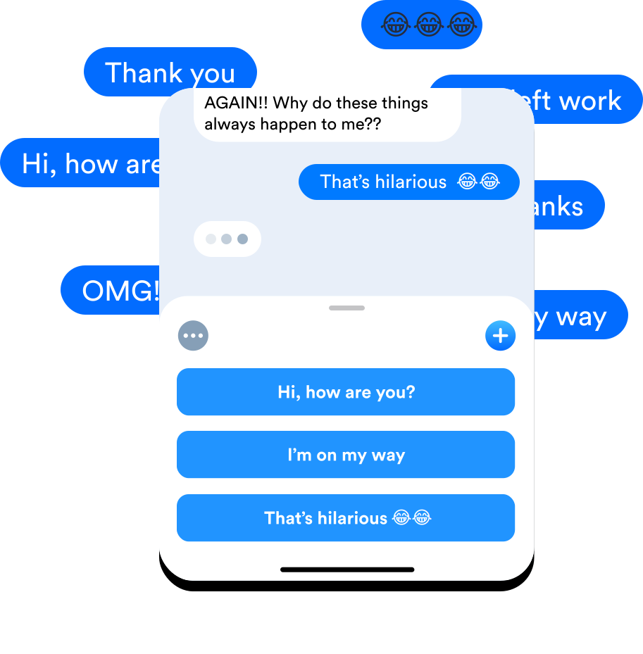
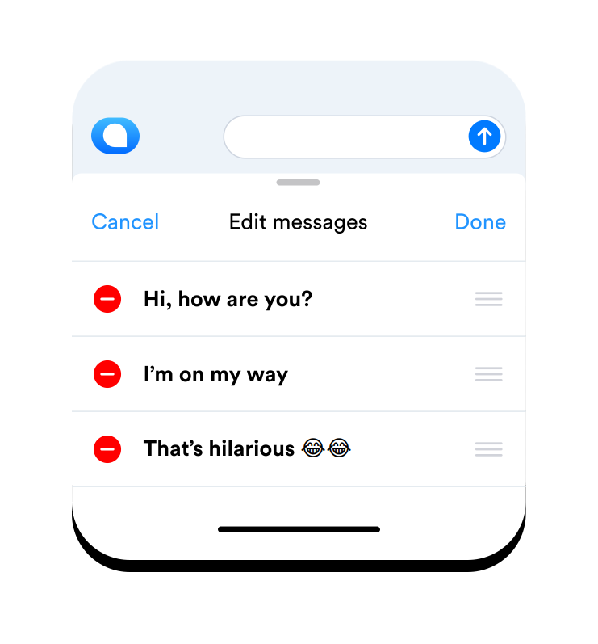

Download
Privacy policy

Save typing, send it Quickr
Quickr lets you send messages that you regularily send to people at the tap of a button.
In a rush and just letting someone know you’re on your way? Just tap and send.
Simple, easy and Quickr ⚡️
Create your own messages
Create and save your regularily sent messages means you'll never have to type them again. You can even save Emoji's 🤓.
Then send your saved message in 1 tap
Simply open up Quickr on the Messages app, and tap the message you want to send. That's it, message sent.
Edit, delete or re-order your messages
Customise Quickr to work for you. Edit messages, delete old ones or move your mostly used one to the top to make it even quicker.
